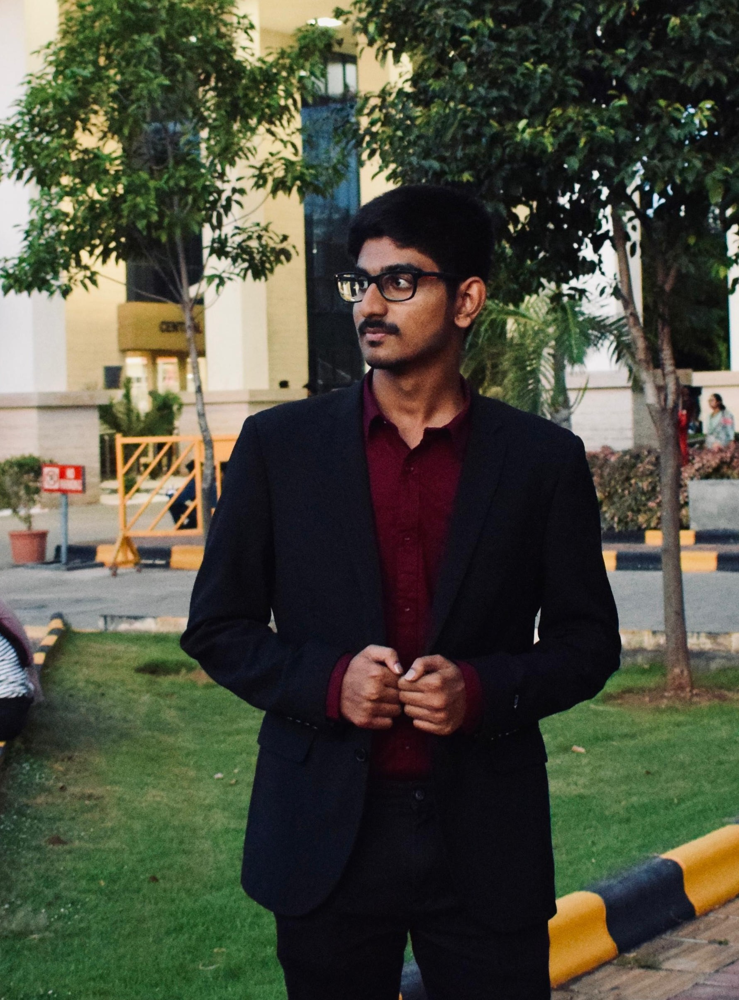

About Myself
As a final-year B.Tech student at VIT specializing in Electronics and Communication Engineering, I am deeply passionate about programming, cloud technologies, and innovative solutions. My academic journey is marked by a relentless pursuit of excellence and a commitment to applying theoretical knowledge to real-world challenges. In my leisure time, I enjoy reading books to broaden my knowledge and foster continuous learning.
As I continue my academic journey, I am eager to broaden my knowledge and apply it to real-world challenges. I thrive on collaborating on innovative projects and am passionate about contributing to impactful solutions in technology and sustainability.
In conclusion, I'm an ambitious engineer aiming to positively impact society. If you're interested in connecting or learning more, feel free to reach out.